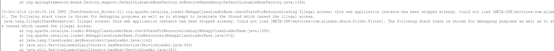
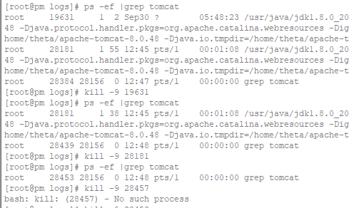

今天对需求进行系统升级部署，本以为只需要几分钟的事，结果却遇到了怪事
我是用Jenkins集成部署的，之前都是点一下几分钟就可以了，结果这次部署完成之后
一直报404，一直打不开页面，很无奈，就去看日志如下

产生这个原因是有多个tomcat进程，我们可以通过Linux命令查看tomcat的进程
查找出tomcat的进程： ps -ef |grep tomcat
杀掉tomcat进程 ： kill -9 tomcat的pid号
通过查询果然tomcat有多个进程，执行命令如下：

为什么会出现多个tomcat进程呢？ 可能是shutdown.sh不能完全杀死tomcat进程，
立马启动就会导致冲突，比较恶心的是部署过程是不会报错的。
本来kill之后重启tomcat之后就可以了，但是最后一个pid不停的变化，不能彻底杀死，
shutdown也无效 重启之后还是两个tomcat进程，一直无法彻底杀死进程，百般无奈之下，
只有重启系统（程序员必杀技），然后startup.sh启动之后，系统可以正常访问了。
Windows系统，tomcat如果有一个进程在运行，再启动的时候就会报8080端口被占用
其实kill应该是可以杀死tomcat进程的，但不知为什么不行，重启之后确实就可以了。